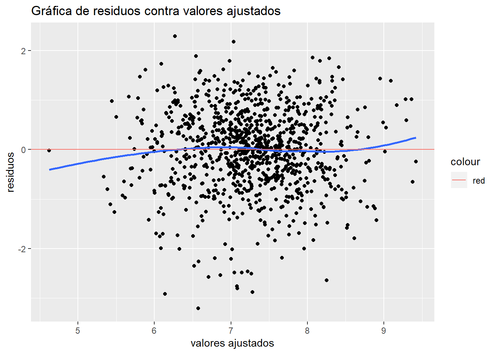
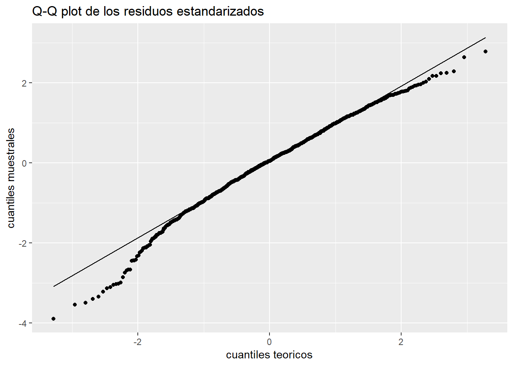
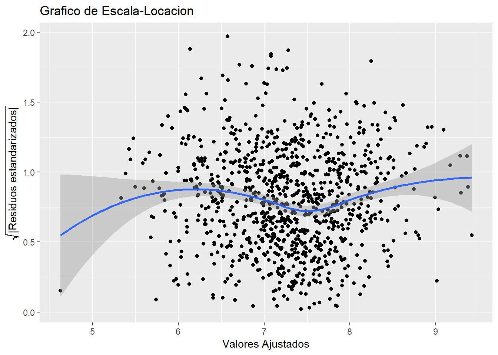
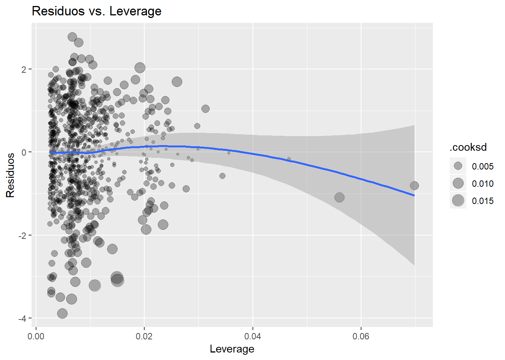
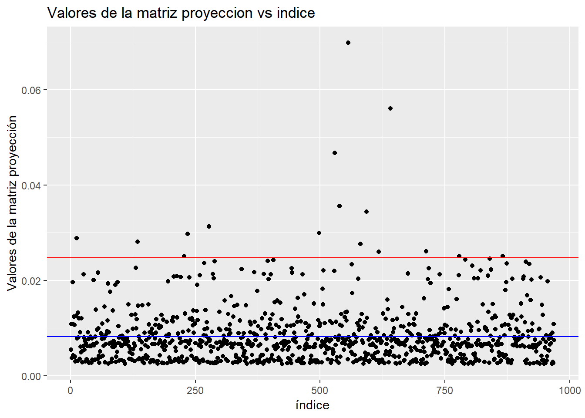
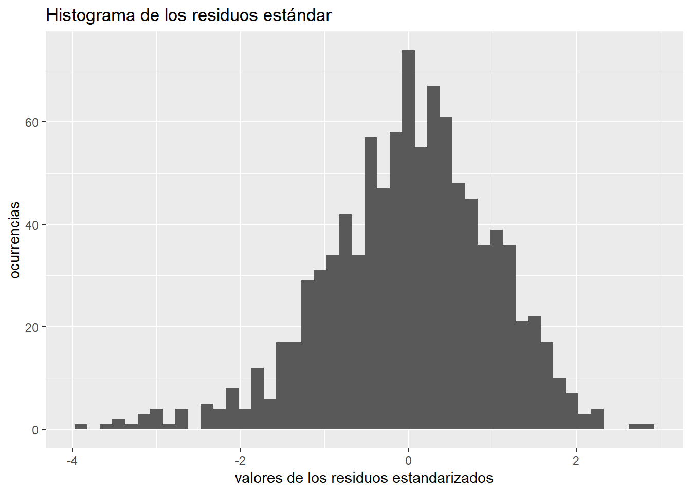
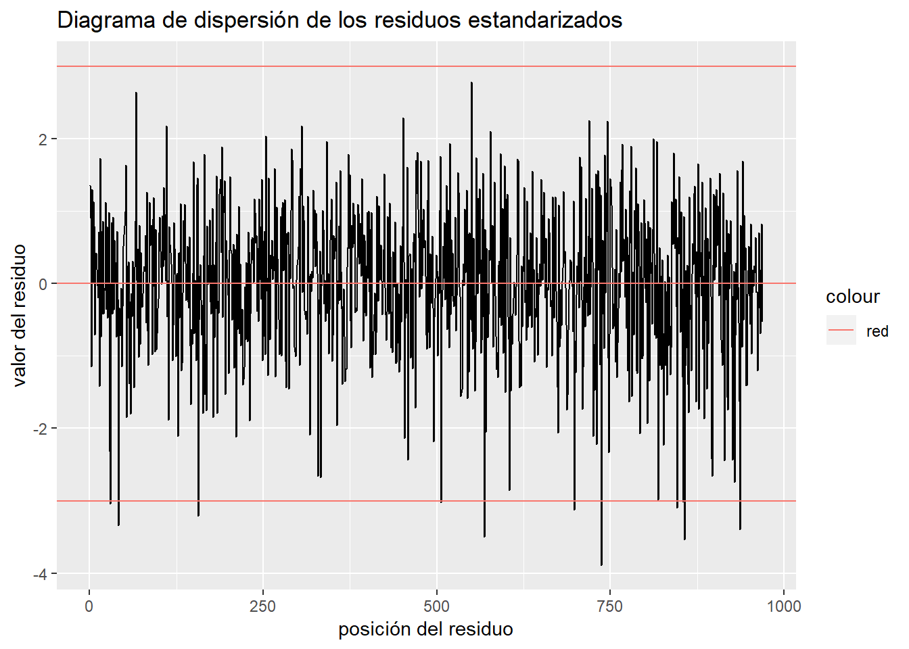
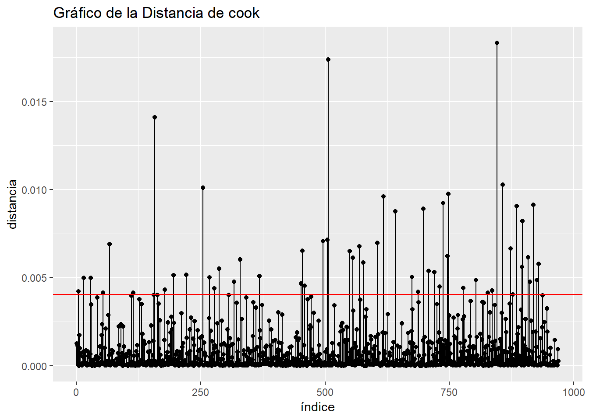

5 Modelo econométrico
El modelo econométrico que propongo es un modelo lineal generalizado, cuya variable respuesta se encuentra en escala logaritmica y que puede ser descrito con la siguiente ecuación :
\[\ln(y) = \beta_{0} + \beta_{1}x_{1} + \beta_{2}x_{2} + \beta_{3}x_{3} + \beta_{4}x_{4} + \beta_{5}x_{5} + \beta_{6}x_{6} + \beta_{7}x_{7} + \epsilon \]
Donde:
\(\ x_{1}\) Es esl gasto general trimestral reportado por la unidad de observación medido en escala logaritmica.
\(\ x_{2}\) Es la edad del jefe de familia.
\(\ x_{3}\) Es la edad del jefe de familia al cuadrado.
\(\ x_{4}\) Es que el sexo del jefe de familia es masculino.
\(\ x_{5}\) La unidad de análisis pertenece al estrato socio ecónomico 2.
\(\ x_{6}\) La unidad de análisis pertenece al estrato socio económico 3.
\(\ x_{7}\) La unidad de análisis pertenece al estrato socio económico 4.
5.1 Resultados del modelo de regresión
##
## Call:
## lm(formula = log(vivienda) ~ log(gasto_mon) + edad_jefe + I(edad_jefe^2) +
## sexo_jefe + est_socio, data = datos2)
##
## Residuals:
## Min 1Q Median 3Q Max
## -3.2057 -0.5016 0.0397 0.5480 2.2927
##
## Coefficients:
## Estimate Std. Error t value Pr(>|t|)
## (Intercept) 1.336e+00 4.186e-01 3.191 0.00146 **
## log(gasto_mon) 6.602e-01 3.904e-02 16.912 < 2e-16 ***
## edad_jefe -4.155e-02 8.802e-03 -4.720 2.70e-06 ***
## I(edad_jefe^2) 3.897e-04 8.278e-05 4.708 2.87e-06 ***
## sexo_jefe1 -2.055e-01 6.247e-02 -3.289 0.00104 **
## est_socio2 5.864e-01 7.197e-02 8.147 1.15e-15 ***
## est_socio3 8.707e-01 9.115e-02 9.553 < 2e-16 ***
## est_socio4 1.133e+00 1.361e-01 8.320 3.00e-16 ***
## ---
## Signif. codes: 0 '***' 0.001 '**' 0.01 '*' 0.05 '.' 0.1 ' ' 1
##
## Residual standard error: 0.8268 on 961 degrees of freedom
## Multiple R-squared: 0.4188, Adjusted R-squared: 0.4146
## F-statistic: 98.94 on 7 and 961 DF, p-value: < 2.2e-16## Analysis of Variance Table
##
## Response: log(vivienda)
## Df Sum Sq Mean Sq F value Pr(>F)
## log(gasto_mon) 1 363.78 363.78 532.1165 < 2.2e-16 ***
## edad_jefe 1 0.64 0.64 0.9384 0.3329
## I(edad_jefe^2) 1 15.10 15.10 22.0924 2.978e-06 ***
## sexo_jefe 1 14.37 14.37 21.0195 5.146e-06 ***
## est_socio 3 79.58 26.53 38.8010 < 2.2e-16 ***
## Residuals 961 656.99 0.68
## ---
## Signif. codes: 0 '***' 0.001 '**' 0.01 '*' 0.05 '.' 0.1 ' ' 1## 2.5 % 97.5 %
## (Intercept) 0.5143712362 2.1572688403
## log(gasto_mon) 0.5835896271 0.7368019585
## edad_jefe -0.0588241483 -0.0242766405
## I(edad_jefe^2) 0.0002272565 0.0005521679
## sexo_jefe1 -0.3280454049 -0.0828596406
## est_socio2 0.4451288375 0.7276122742
## est_socio3 0.6918135486 1.0495494610
## est_socio4 0.8654571212 1.39978762255.1.1 Interpretación de los resultados de regresión
Después de ajustar el modelo con los regresores propuestos, podemos escribir la ecuación de regresión como:
\[\ \hat{ln(y)} = 1.336 + 0.6602x_{2} - 0.04155x_{2} + 0.0003897x_{3} -0.255x_{4} + 0.5864x_{5} + 0.8707x_{6} + 1.133x_{7}\]
El P-value de la prueba F de significancia global del modelo esta por debajo del \(\alpha\) = 0.05 (número que, generalmente se utiliza para evaluar la significancia de pruebas estadísticas), recordemos que la hipótesis a contrastar en la prueba de significancia global son \[ \ H_{0} : \beta_{1} = \beta_{2} = \cdots = \beta_{7} = 0 \hspace{0.5cm}vs.\hspace{0.5cm} H_{1} : \exists \hspace{0.3cm} \beta_{i} \neq 0 \hspace{0.3cm} \ p.a \hspace{0.3cm} \ i \hspace{0.3cm} \epsilon \hspace{0.3cm} \{1,2,\dots,7\} \] Del resultado de la prueba, rechazo la hipótesis nula, por lo que alguno de los coeficientes del modelo es distinto de cero, y por lo tanto el modelo es globalmente significativo.
El P-value de las pruebas t de significancia individual de todos los parámetros esta por debajo del \(\alpha = 0.05\) ,por lo que rechazo la hipótesis nula, recordemos que las hipótesis a contrastar de la prueba t de significancia indivual es : \[ \ H_{0}:\frac{\hat{\beta_{j}}}{S(\beta_{j})} = 0 \hspace{0.5cm} vs \hspace{0.5cm} H_{1} : \frac{\hat{\beta_{j}}}{S(\hat{\beta_{j}})} \neq 0\] Por lo que todas las variables incluidas en el modelo tienen algún efecto (Caeteris Paribus) sobre el gasto en vivienda que no es debido solamente al azar de tal forma que son estadísticamente significativas.
Puedo decir que, de acuerdo a la medida de bondad de ajuste \(\ R^{2}\) ajustado que 41% de la desviacion del modelo base es directamente imputable a la existencia de correlación de la variable explicada con los regresores.
El modelo base es aquel donde solo se tienen en cuenta los efectos capturados por el intercepto al origen (\(\hat{\beta_{0}}\)), es decir, cuando el resto de las $ x_{i} $ se mantienen en 0.
Las unidades observacionales que no cumplen explícitamenente alguna de las características de las variables categóricas(por ejemplo, que el sexo del jefe de familia sea femenino, o que la familia pertenezca al estrato socio-económico 1) son efectos capturados en el modelo base
5.2 Análisis de residuales
El análisis de residuales es una herramienta que me ayudará a comprobar los supuestos que todo modelo de regresión lineal multiple (RLM) debe cumplir, esto para saber que la inferencia sobre los parámetros del modelo es correcta y confiable. Los supuestos de RLM son:
Linealidad en los parámetros El modelo poblacional puede ser escrito como :
\[\ y = \beta_{0} + \beta_{1}x_{1} + \beta_{2}x_{2} + \dots + \beta_{k}x_{k} + \epsilon \]Muestro aleatorio Significa que tenemos un a muestra de n observaciones de las variables ${x_{i1},x_{i} x_{ik},y| i = 1,2 ,n } $ que siguen el modelo poblacional del supuesto 1.
No existencia de multicolinealidad perfecta : Ninguna de las columnas de la matriz \(\ X\) (la matriz de diseno) es combinacion lineal del resto de las columnas, esto es: \[ \ |(X^{T}X)^{-1}| > 0 \] Esto se pide para que sea posible calcular los estimadores de los coeficientes de regresión, sin embargo, la Multicolinealidad imperfecta que es: \[ \ |(X^{T}X)^{-1}| \approx 0 \] que se presenta cuando existe una alta correlación entre variables tambien representa un grave error en un modelo, ya que se “inflan” los errores estándar de los estimadores, lo cual genera una impresición y “ensanchamiento” de los intervalos de confianza.
Esperanza condicional de los errores es 0 Esto es \[ \ E[\epsilon|x_{1},x_{2},\dots,x_{k}] = 0 \] Este supuesto asegura que los estimadores de los efectos ceteris paribus sean insesgados
Homocedasticidad condicional : La varianza de los errores, dados los parámetros es constante, i.e:
\[ \ Var(\epsilon_{i}|X) = \sigma_{\epsilon}^{2} \]
- Normalidad multivariada : Los errores poblacionales son independientes de las variables explicativas $ x_{1},x_{2},,x_{k} $ y se distribuyen normal con media 0 y varianza constante, i.e:
\[ \epsilon \sim {\sf }N(0,\sigma_{\epsilon}^{2}) \]
Esto es para que los estimadores de los coeficientes de regresión sean eficientes (de mínima varianza) y que los intervalos de confianza sean exactos.
5.2.1 Tests gráficos para comprobar los supuestos de regresión lineal múltiple








5.2.2 Tests estadísticos para comprobar las hipótesis de regresión lineal múltiple
Quiero comprobar que la esperanza de los residuos sea 0 , por lo que haré el siguiente contraste de hipotesis con una prueba t \[ \ H_{0} : E(\epsilon|X) = 0 \hspace{0.5cm} vs \hspace{0.5cm} H_{1}: E(\epsilon|X) \neq 0 \]
## [1] 1Como el P-value es mayor que el valor de significancia \(\alpha = 0.05\) no rechazo la hipótesis nula de que los residuos tienen valor esperado 0.
Aplico la prueba de Durbin-Watson para detectar si el coeficiente de correlación es 0 o distinto de cero, esto para verificar la evidencia de independencia entre los residuos, sus hipotesis son :
\[ \ H_{0} : \rho(i,i+1) = 0 \hspace{0.5cm} vs \hspace{0.5cm} H_{1}: \rho(i,i+1) \neq 0 \]
## lag Autocorrelation D-W Statistic p-value
## 1 0.01480526 1.968207 0.66
## Alternative hypothesis: rho != 0Como el P-value es mayor que el valor \(\alpha = 0.05\) entonces no rechazo la hipótesis nula de que el coeficiente de correlación es 0.
Aplico la prueba de Breusch-Pagan, cuyas hipótesis a contrastar son : La varianza de los residuos es constante vs. la varianza de los residuos es una función de los valores ajustados del modelo. Esto es para verificar la homocedasticidad. \[ \ H_{0}: Var(\hat{\epsilon} |X) = \sigma_{\epsilon}^{2} \hspace{0.5cm} vs \hspace{0.5cm} H_{1}: Var(\hat{\epsilon} |X) = \sigma_{\epsilon}^{2}( \hat{Y}) \]
##
## studentized Breusch-Pagan test
##
## data: fitb
## BP = 5.9653, df = 7, p-value = 0.5438Como el P-value es mayor que \(\alpha = 0.05\) , por lo tanto no rechazo la hipotesis nula de una varianza constante.
Tambien proveo el resultado de la prueba de Goldfeld-Quandt, cuyas hipótesis son: La varianza es igual en un primer grupo de residuos que en un segundo grupo de residuos vs, la varianza en el primer grupo de residuo es es menor que la varianza en un segundo grupo (es decir, la varianza aumenta conforme crecen los valores ajustados del modelo) h \[ \ H_{0}: \sigma_{\epsilon_{1}}^{2} = \sigma_{\epsilon_{2}}^{2} \hspace{0.5cm} vs \hspace{0.5cm} H_{1}: \sigma_{\epsilon_{1}}^{2} < \sigma_{\epsilon_{2}}^{2}\]
##
## Goldfeld-Quandt test
##
## data: fitb
## GQ = 0.58906, df1 = 477, df2 = 476, p-value = 1
## alternative hypothesis: variance increases from segment 1 to 2Como el P-value es mayor que el valor de significancia \(\alpha = 0.05\) entonces no rechazo la hipótesis nula de que la varianza es igual en ambos segmentos
Proveo tambien el resultado de la prueba de Kolmogorov-Smirnov, cuyas hipótesis a contrastar son :
\[ H_{0}: \frac{\hat{\epsilon}}{\sqrt{S^{2}(1-h_{i})}} \sim N(0,1) \hspace{0.5cm} vs \hspace{0.5cm} \frac{\hat{\epsilon}}{\sqrt{S^{2}(1-h_{i})}} \nsim N(0,1) \hspace{0.5cm} \]
##
## One-sample Kolmogorov-Smirnov test
##
## data: resultados_fit$.std.resid
## D = 0.037732, p-value = 0.1267
## alternative hypothesis: two-sidedComo el P-value es mayor que el valor de significancia \(\alpha = 0.05\) entonces no rechazo la hipotesis nula de que los residuos estandarizados se distribuyan normal con parametros de media 0 y varianza 1.
La identificación de la multicolinealidad no se puede hacer de forma tradicional en este modelo, ya que se incluye un termino cuadrático (la edad del jefe de familia al cuadrado) como regresor, por lo cual, para proveer evidencia de que no existe multicolinealidad entre los regresores, cree un modelo de regresion auxiliar donde excluyo el termino cuadrático. A continuación presento los factores de inflacion de varianza (FIV) de esa regresion auxiliar.
Recordemos que los FIV se calculan en dos pasos, primero se crean i distintas regresiones por el método de mínimos cuadrados cuya variable explicada es \(\ x_{i}\) y los regresores son el resto de las variables, es decir
\[ \ x_{i} = \alpha_{0} + \alpha_{1}x_{1} + \dots + \alpha_{k}x_{k} + \epsilon \] Despues se calcula el FIV para cada coeficiente \(\hat{\beta_{i}}\) del modelo de regresión original (En nuestro caso es el modelo que no incluye el termino cuadrático) \[ \ FIV_{i} = \frac{1}{1-R^{2}_{i}} \] Donde \(\ R_{i}^{2}\) es el coeficiente de determinacion de la regresion cuya variable explicada es \(\ x_{i}\) y sus regresores son el resto de las k variables explicativas.
Por lo general se dice que una variable aporta multicolinealidad al modelo si \(\ FIV(\hat{\beta_{i}}) > 10\) lo cual claramente no ocurre entre los regresores, por lo que podemos descartar la existencia de multicolinealidad ya que no existe evidencia suficiente en pro de esta.
## GVIF Df GVIF^(1/(2*Df))
## log(gasto_mon) 1.296543 1 1.138658
## edad_jefe 1.090427 1 1.044235
## sexo_jefe 1.037531 1 1.018593
## est_socio 1.226484 3 1.0346115.2.3 Identificación de los valores extremos e influyentes
A continuación presento una tabla cuyos metricas de residuo estandar y distancia de cook son aparentemente mas grandes que el resto (residuo estandar > 3 & distancia de cook > 4 veces el promedio de la distancia de cook de los residuos), esto por que son potenciales observaciones extremas que requieren mayor análisis.
| count | .std.resid | .cooksd |
|---|---|---|
| 157 | -3.212012 | 0.0140883 |
| 506 | -3.026296 | 0.0173619 |
| 569 | -3.494389 | 0.0067647 |
| 698 | -3.125113 | 0.0088935 |
| 737 | -3.886520 | 0.0092244 |
| 846 | -3.098029 | 0.0183249 |
| 857 | -3.540299 | 0.0102776 |